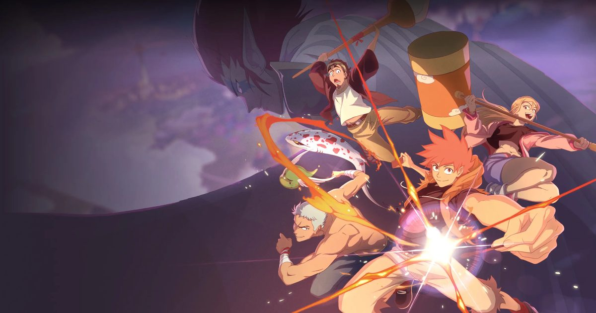

2026-10-16 · 新番深读
法国漫画《dreamland》的动画版今天 10 月 16 日起登陆 Crunchyroll（按欧美时区当地时间落地，法国 ADN 与日本均为 10/17 周更），日本则进入 ABC 电视 / 朝日系超过 24 台的深夜档 ANiMAZiNG!!!。做这件事的两家工作室——Ellipse Animation 与 La Chouette Compagnie——都在法国。原作作者 Reno Lemaire 也是法国人，从 2006 年 1 月画到今天，出到第 24 卷，法国累计印量超过 80 万册。
换句话说：一个法国人用日本少年漫的语法画了二十年，做成了法国动画，然后被配上全套日语配音，放回日本深夜电视上播出。这条链路的方向跟过去三十年完全相反，这才是今天真正值得聊的事。

主角 特伦斯（Terrence）是个高中生。母亲死于火灾之后，他就把自己关进了一个没有情绪的世界里，日常生活照常过，唯一的例外是——只要看见明火，他就会被拖进一个清醒版的噩梦。每一次睡着，他都只能无助地重演那场火，醒来之后怕火怕得更厉害。
转机发生在他终于不想再逃的那一晚：他在梦里意识到自己在做梦，于是没有跑，而是正面接下了那些火焰。恐惧被接住的瞬间，他成为了「旅人（Traveler）」——一种能自由进入 dreamland 的特殊梦者。在那个由全人类的梦与噩梦共同构建出的第二世界里，现实规则不成立，而他曾经最怕的火，变成了他能控制的火。
之后他的生活被切成两半：白天是普通学生，有朋友、有暗恋的同学；夜里则一次次进入 dreamland——除了变强，他其实还有个更私人的理由，他想在梦里再见到母亲。
第一季 10 集、每集约 22 分钟。导演是 Juan Pablo Machado（部分资料并列 Joe Celse），系列构成 Jean-Luc Cano 与 Antoine Maurel，角色设计 Bénédicte Ciaravino，作曲 Fabien Nataf，出品方是 Dupuis Edition & Audiovisuel，全球发行由 Mediatoon Distribution 负责。
有一个词必须先讲清楚：manfra——法国人画的、用日本漫画语法讲的漫画（"manga" + "français"），Pika Édition 从 2000 年代中期开始专门出这一类。《dreamland》就是这一谱系里最有名的招牌作。
Reno Lemaire 本人是公认的日本漫画重度读者，画风、分镜、战斗节奏全在少年漫的语汇里；但故事的场景、人物的生活细节、说话方式，又都是法国的。这是一种很罕见的东西：用日本的语法，讲法国人的日常。
那为什么等了二十年才动画化？因为这条管道几乎是单向的。日本漫画被动画化是常态，法国漫画被动画化极少——而更少见的是"法式漫画被做成法式动画"。绝大多数欧美漫画改编动画的路径是：作品被卖到日本，由日本工作室做成一部看起来像日本动画的东西。而《dreamland》从头到尾没有经过东京：法国的公司、法国的导演、法国的班底，把它做成了法式动画。
项目其实 2022 年就宣布了，日本播出是 2026 年 7 月才正式确认的。中间这四年，大概都在等一件事成熟——市场愿不愿意接受一部"非日本产但长得像日本动画"的作品。
这就是我们判断它值得单独写一篇的核心。
过去三十年的产业逻辑是：日本的审美输出到全世界，欧美的创作者看着《周刊少年 Jump》学画、学分镜，然后在自己国家出版。这是一条只出不进的河。
《dreamland》把这条河的方向掰回来了。一个法国人花二十年学日本语法，学成之后，成品被配上全套日语配音，塞进了日本深夜电视的档期里。这不是"作品出海"，这是作品回流——回到原产地，让原产地的观众来验收这门手艺学到不到位。
这件事的心理意义比商业意义更大。做一套日语配音版是一件很贵、很麻烦、而且对法国本土观众毫无直接价值的事。愿意花这笔钱，图的是那个「在东京被播出过」的认证——而这个认证一旦拿到，回流到欧洲本土的宣传价值远高于投入。
而且它的落地位置很讲究：ANiMAZiNG!!!，朝日系深夜动画档，全国 24 台以上联播。这不是给外国作品放在角落里试水的时区，是正经的动画档位。由東北新社负责日语声音制作，音效指导久保宗一郎，日语本地化交给 Amuse Creative Studio——它不是"配了个日语字幕"，是重新做了一版日语版的片子。
第二个有意思的细节在钱和信息结构上。
传统日本动画项目的中心是制作委员会——出版社、电视台、唱片公司、周边商凑钱，版权切块，然后按日本的时间表开机，海外平台只能后来买授权。整个流程是"先日本、后世界"。
《dreamland》完全不是这个结构。出品是欧洲方，发行由 Mediatoon 统一操盘，流媒体直接和 Crunchyroll 谈，覆盖区域一次性给了北美、中南美、欧洲、非洲、大洋洲、中东和独联体；法国本土交给 Animation Digital Network（ADN）；合作方名单里还有 France Télévisions 这种国家电视台。
这意味着它不需要等日本先播、再等海外授权批下来。欧美观众和日本观众几乎是同时看到的。对于一部原作在法国、没有英文版漫画的作品来说，这个同步本身就是最大的运营决定——它把"日式动画的观看仪式"整套搬了过来，却不接受"日式动画的发行延迟"。
顺便说一句日本本土的情况：日译本由 Euromanga 与明日香出版社从 2024 年 10 月开始出，译者原正人。也就是说，日本读者能看原作的时间，其实比动画播出早不到两年。对一部已经连载二十年的作品来说，这个时间差正好——原作刚铺完货，动画就来抬。
制作方明确过改编规划：覆盖原作前 19 卷，分成三季，每季 10 集。
这个数字值得单独拎出来看。欧美漫画改编动画最常见的命运是——拿到一季，做完就消失，不管原作后面还有多少故事。原因很简单：一季的资金链最短、风险最小，没人愿意为一个未验证的海外 IP 预付款三季。
而《dreamland》提前锁定了三季 30 集，一次承诺要讲完将近二十年的积累。这等于出品方在对出资人说：我们知道这东西值得讲完，钱先到位。
但这里同时埋着两个真实的风险，我们不想只讲好听的：
还有一个更实际的障碍：这部漫画目前没有英文版。Pika 出法语版，Euromanga 与明日香出日语版，英语圈至今没有出版社接手。也就是说，对绝大多数观众而言，动画是唯一入口。这既是它的机会，也是它的天花板——原作党不存在，所有人都得从零建立感情。
概念与产业意义：9.0 / 10（manfra 逆向回流日本深夜档，是近年来最值得记一笔的发行样本）
改编承诺：8.5 / 10（一次锁定三季 30 集、覆盖 19 卷，罕见；但主动停在 19 卷是个未解的问号）
制作班底：8.0 / 10（法方班底＋東北新社日语声音制作，配置是认真的，不是外包试水）
首季节奏风险：6.5 / 10（一集吃掉 0.6 卷以上，战斗密度是明确隐患）
入坑门槛：7.0 / 10（无英文版漫画、二十年积累的原作，动画版承担了全部引入责任）
编辑部期待值：8.2 / 10
几组可查的硬数据：原作 2006 年 1 月起由 Pika Édition 出版，截至 2026 年 7 月共 24 卷，法国印量超过 80 万册；日译本 2024 年 10 月起由 Euromanga / 明日香出版社发行；动画第一季 10 集 × 约 22 分钟；日本档期 ANiMAZiNG!!!（ABC 电视 · 朝日系 24 台以上，周六深夜 26:00 档）；Crunchyroll 覆盖北美、中南美、欧洲、非洲、大洋洲、中东、独联体；OP 为 Faulieu.「movin'on」、ED 为 富冈爱「dream catcher」，两曲 10 月 18 日数字发行；日配阵容包含波多野翔、田野麻美、本渡枫、浪川大辅、江口拓也、吉野裕行、田中正彦、古川慎等。
我们不太想用"法国版火影"这类说法去描述它，那会遮掉它真正特别的地方。
它特别的地方在于它证明了「少年漫」已经不再是一个产地，而是一种通用语法。就像好莱坞的西部片最后变成了全世界的类型片语法一样，少年漫这套"平凡少年 + 被低估的天赋 + 跨越恐惧的成长 + 另一个世界"的公式，已经可以被任何国家的创作者使用，并且做出来的东西不再需要日本的盖章才能算数——但它仍然想要那个盖章，所以它才会去做一版日语配音、去抢日本深夜档。
这个矛盾很可爱，也很诚实。它不是文化输出的胜利，也不是文化挪用的争议，它就是一个画了二十年的人，终于想看看自己学的那门语言，在母语国家听起来是怎么样的。
| 路线 | 典型做法 | 结局 |
|---|---|---|
| 卖给日本工作室 | 西方 IP，日本班底，做成"像日漫的东西" | 通常一季，试水即止 |
| 留在本土做 | 本国团队自制，风格自成一派 | 口碑稳，但难以进入日系观众视野 |
| dreamland（2026） | 法方自制 + 全套日语配音 + 日本深夜档 + 全球同步流媒体 | 首次真正尝试"回流验收"，结果待观察 |
第三行是新的。前两条路都有人走通过，也都有人走死过，但"本土自制、再回原产地播出"这一步，需要出品方同时有资金耐心和对 IP 的绝对信心。它不是更聪明的做法，是更贵、更慢、更难的做法。
《dreamland》的故事很干净——怕火的孩子学会了控制火，然后在梦里找妈妈。这个设定本身是成熟的、扎实的少年漫开局，不是那种靠反转吊人的东西。
但我们更建议你用另一个视角去看它：这是过去二十年里，第一次有非日本团队用日本语法做的作品，被正正经经地放在日本深夜档里，还配了全套日语声优。
它能不能成，三年后才有答案。但它的存在本身，就已经把"少年漫属于谁"这个问题，往前推了一步。